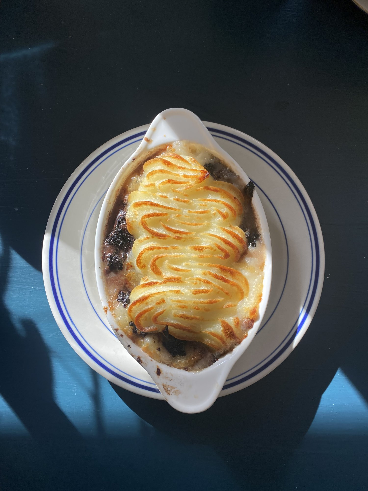
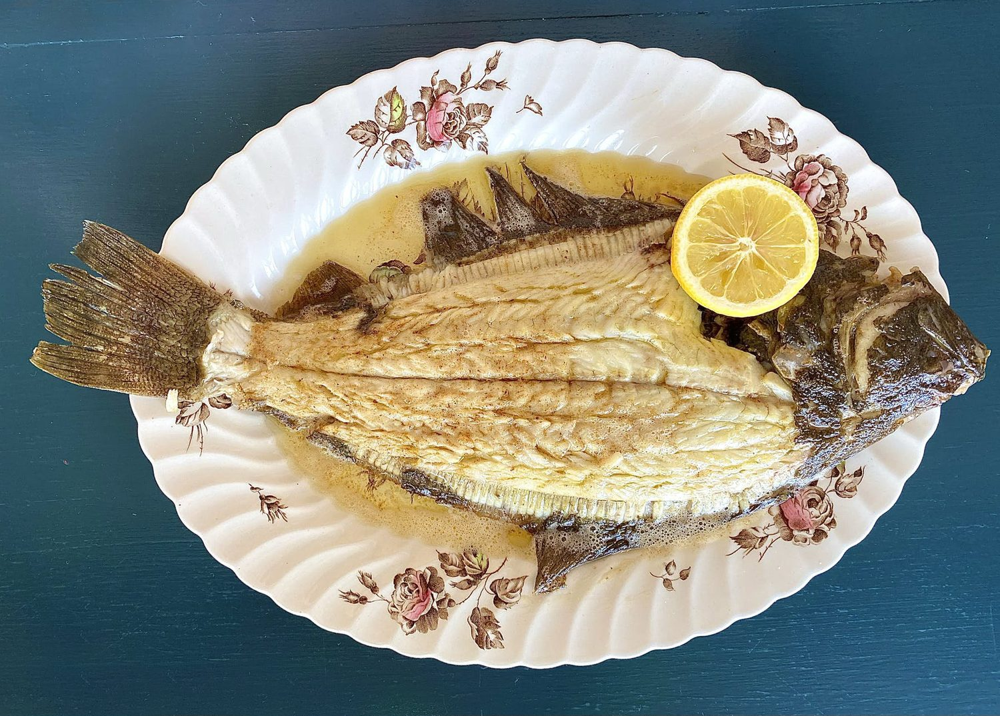
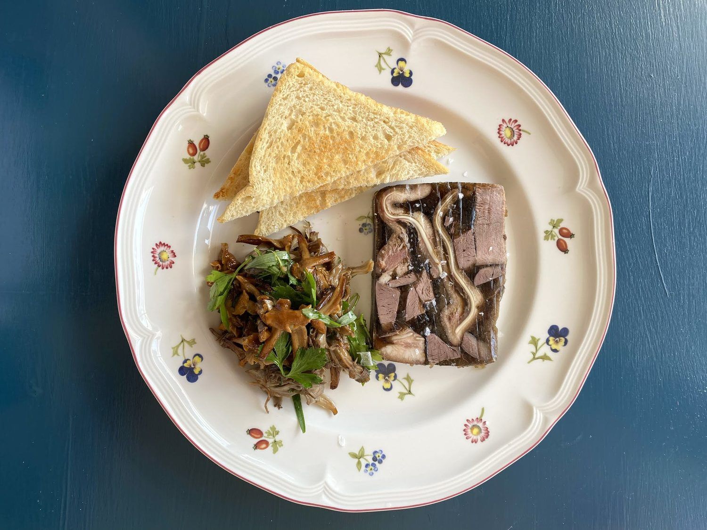
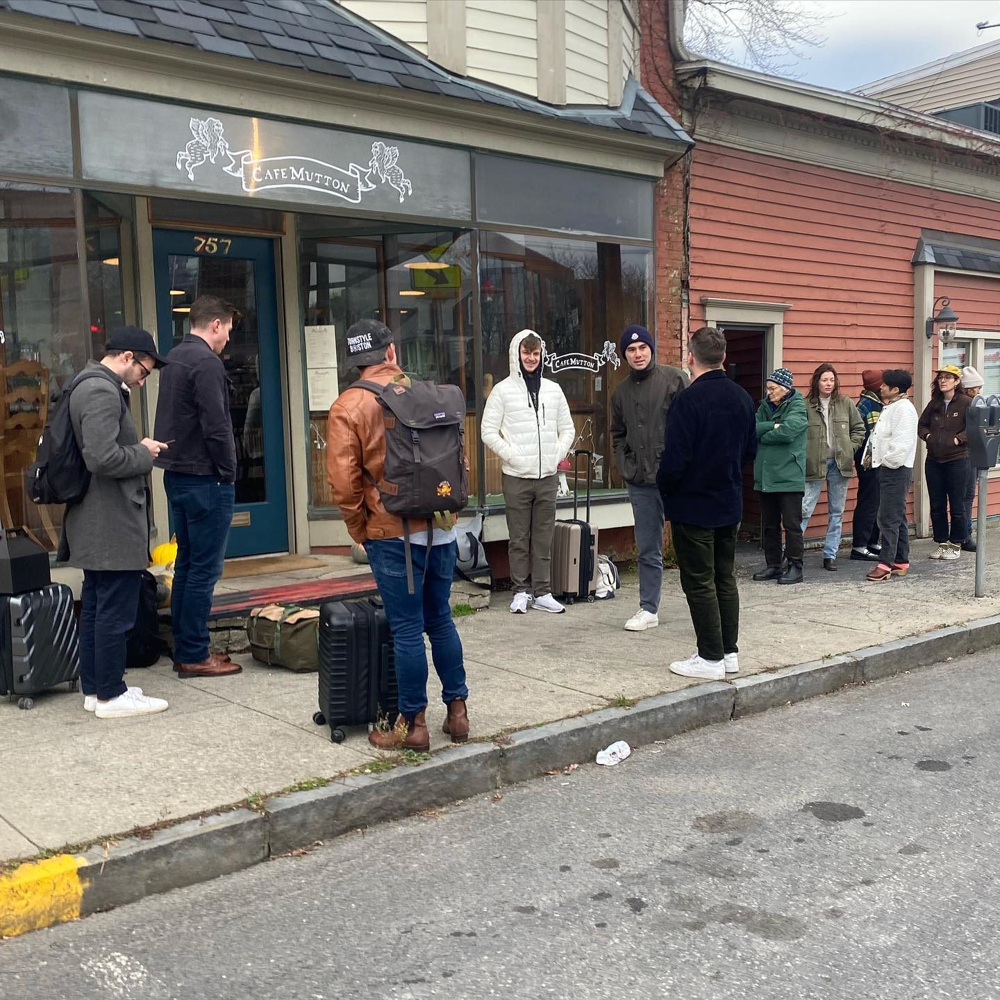

757 Columbia Street · Hudson, NY
Simple food, very close attention.
- Today Dinner Wed–Fri 5–9 PM · Brunch Sat–Sun 10 AM–3 PM · Closed Mon–Tue
- Tables Reservations for Friday dinner only. Wed–Thu dinner and weekend brunch: no reservations, just come by.

Off the board
Specials
Sunday 10/11
Friday 10/09
Specials run out and change. Call to check: (518) 671-6230.


A small neighborhood restaurant
“Our food is simple, but we pay it very close attention, and we really like meat. We also like vegetables (so much).”
Cafe Mutton sits on a sunny corner of Columbia Street. Shaina Loew-Banayan is chef and owner; the dinner menu changes every Friday. Eloiser is general manager (and, per the restaurant, security guard).
Visit
Cafe Mutton757 Columbia Street
Hudson, NY 12534
| Monday | Closed |
|---|---|
| Tuesday | Closed |
| Wednesday | Dinner 5–9 PM |
| Thursday | Dinner 5–9 PM |
| Friday | Dinner 5–9 PM · reservations |
| Saturday | Brunch 10 AM–3 PM |
| Sunday | Brunch 10 AM–3 PM |
Holiday hours aren’t posted. Call to confirm.
